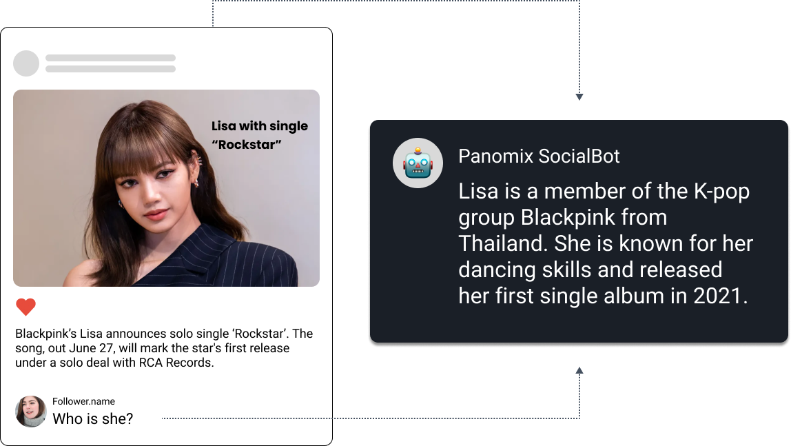
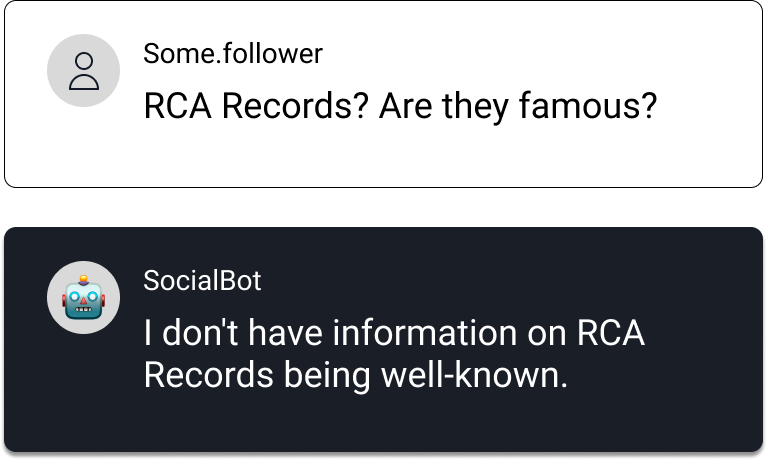
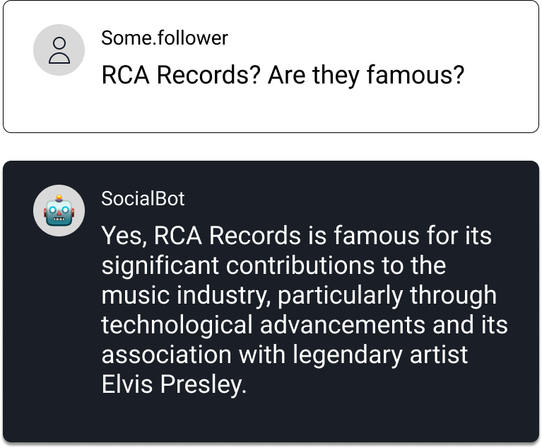
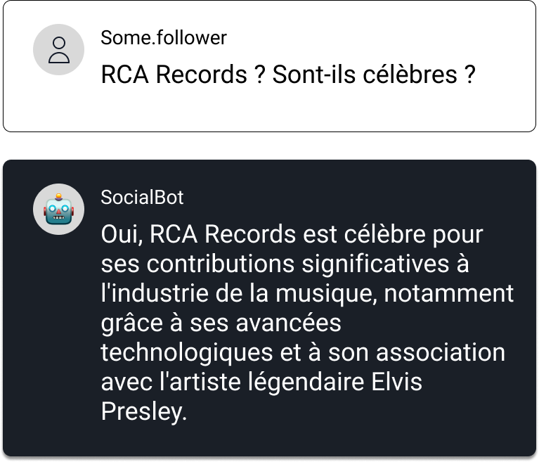

소셜봇 - 감소하는 SNS 오가닉 노출을 인터랙션 유도로 반등시킨 댓글봇
파노믹스 소셜봇은 소셜 미디어 채널의 효과적인 관리를 돕는 툴입니다. 리소스 부족으로 직접 응대가 어려웠던 팔로워들의 댓글과 DM 모두를 LLM 기반의 AI로 사람처럼 관리할 수 있고, 이를 통한 실질적인 채널의 성장도 기대할 수 있습니다.
AI 과제: Discover
클라이언트는 정치, 경제 등 민감한 주제를 다루는 SNS 채널을 운영하는 기업이었습니다.
하지만 다음과 같은 문제로 인해 소셜 채널의 유기적 노출(Organic Impression)이 지속적으로 하락하고 있는 문제를 겪고 있었습니다:
유기적 도달률의 지속적 하락
- Instagram, Facebook 등 주요 플랫폼에서 콘텐츠가 자연스럽게 노출되지 않고 있었습니다.
사용자 소통의 부재
- 댓글에 즉시 대응할 수 있는 체계가 없어, 참여 유도가 어려웠습니다.
대응 인력의 한계
- 쏟아지는 댓글 수를 수작업으로 관리하기엔 인력이 부족하고, 운영자의 악성 댓글 대응 부담도 컸습니다. 또한 부적절한 대응은 브랜드 이미지에도 부정적인 영향을 미칠 우려가 있었습니다.
사전 데이터 분석을 통해, 댓글 수와 유기적 노출량 사이의 강한 양의 상관관계를 확인하여 액션 플랜에 반영하였습니다.
AI 솔루션: Deliver
파노믹스는 클라이언트를 위한 맞춤형 소셜봇를 설계하고 배포했습니다. AI 전담 계정이 뉴스 맥락을 파악해 자동 댓글을 남기고, 관리자 태그로 쉽게 제어할 수 있어 사용자 참여를 유도하고 운영 효율을 높이는 방식을 구현했습니다.
성과 Performance
- 소셜봇으로 기여한 댓글 수: 78,000건 이상
- 자연 노출(Organic Impression) 9.2% 이상 증가
- 댓글을 통한 사용자 반응 유도 및 악성 대응 리스크 감소
- 기존 콘텐츠 재활성화 및 알고리즘 노출 최적화에 기여
기능 소개 Features
게시물과 사용자의 댓글을 이해
파노믹스 소셜봇은 Vector DB, OCR, 이미지 및 텍스트 분석 등을 포함한 다양한 기술로 게시물의 내용을 이해합니다.
예를 들어, 유저가 "그녀는 누구인가요?"라고 댓글을 남기면, 봇은 게시물의 맥락을 바탕으로 추가 정보 없이도 정확하게 답변할 수 있습니다.

AI 댓글의 완벽한 제어
파노믹스 소셜봇은 사용자 질문에 정확하게 답변하기 위해 신뢰할 수 있는 출처에서만 정보를 수집합니다. 정보를 찾을 수 없을 경우, AI는 억지로 답변을 하지고 솔직하게 답을 모른다고 답변할 수 있어, 유저 신뢰도를 유지할 수 있습니다.

추가 정보 검색
신뢰할 수 있는 미디어 소스를 추가하여 AI의 지식을 확장할 수 있습니다.
사용자 댓글을 기반으로 추가 정보가 필요할 경우, 시스템은 신뢰할 수 있는 출처의 기사에서 정보를 가져와 응답을 생성합니다.

다국어 지원 및 24/7 운영
파노믹스 소셜봇은 다국어를 지원하며 상시운영을 통해 언제나 유저와 지속적으로 소통할 수 있습니다.

모니터링 및 안전 보호
파노믹스는 고객의 브랜드 가치를 소중하게 생각합니다.
AI의 톤 앤 매너를 각각의 브랜드에 맞게 조정할 수 있는 테스트 플레이그라운드를 제공합니다. 또한, 슬랙이나 구글 챗과 같은 메신저에 연결해 대화를 실시간으로, 더 세밀하게 모니터링 할 수도 있습니다.
데이터 거버넌스
파노믹스 소셜봇은 Microsoft Azure 클라우드 기반으로, 대규모 언어 모델(LLMs)의 활용을 위해 Azure OpenAI와 연결됩니다.
Azure OpenAI는 고객 데이터의 보안과 정보보호에 최우선으로 하어ㅕ OpenAI를 포함한 제3자에 의해 데이터가 사용하지 않도록 다양한 안전장치를 보장합니다.
기술 구조 Tech Architecture
소셜봇은 광학 문자 인식(OCR) 기술을 적용한 이미지 프로세싱을 통해 인스타그램/페이스북 게시글의 이미지를 분석하고, AI가 활용할 수 있는 RAG(벡터 데이터베이스)를 이용한 정확한 정보 기반으로 유저와 소통합니다.
문의하기
파노믹스와의 협업을 원하신다면, 간단한 정보를 남겨주세요.
👉 구글폼 작성하기 또는 info@panomix.io로 메일 주세요.